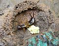

Кожистокры́лые или Уховёртки(лат. Dermaptera) — отряд насекомых с неполным превращением. Насчитывается более 1900 видов (1967 видов по состоянию на февраль 2008 года), включая 49 ископаемых видов (Zhang, 2013).
Названия уховёрток в различных языках означают «проткни уши» или нечто подобное. Существует несколько предположений, объясняющих это. Во-первых есть миф, что уховёртка залезает в ухо спящего человека, и, протыкая барабанную перепонку, добирается до мозга. Она питается им и дорастает до размеров гусиного яйца, жертва уховёртки при этом умирает. Конечно, уховёртка может случайно залезть в ухо, но всё последующее — никем не подтверждённый вымысел, «бессовестная клевета», как выразился Игорь Акимушкин. Некоторые люди также считают, что название эти насекомые получили благодаря своим крыльям в сложенном состоянии, напоминающим уши. Другие предполагают, что в этом сыграла существенную роль схожесть клещей на конце тела уховёрток с инструментом, которым косметологи прошлого прокалывали женские уши для серёжек.

Длина тела составляет 3,5—50 мм. Передние крылья твёрдые и сильно укорочены (превращены в твёрдые, кожистые надкрылья), задние — перепончатые, но существуют и бескрылые формы. На конце брюшка имеются придатки в виде пары клещей (церки). Влаголюбивы и теплолюбивы, ведут преимущественно ночной образ жизни. Питаются детритом (органическими остатками животных и растений).
Известны наружные паразиты (Arixenia esau) летучих мышей (Cheiromeles torquatus), и хищники (Arixenia jacobsoni) питающиеся насекомыми, населяющими гуано летучих мышей (этих уховёрток выделяют в особый подотряд Arixenina). Гемимериды (Неmimerida, 7 видов рода Hemimerus, Африка) паразитируют на коже хомяковой крысы (Cricetomys gambianus).